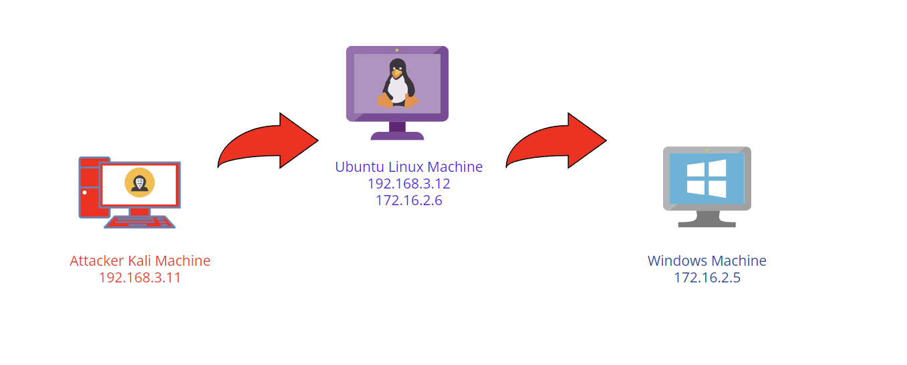
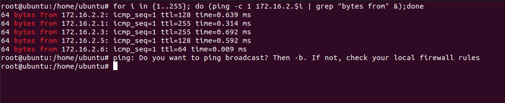
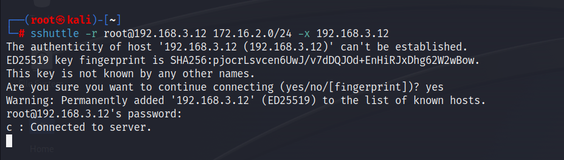
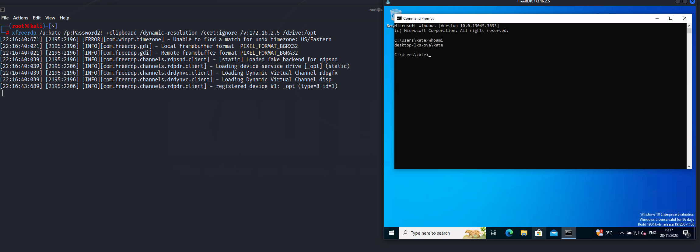

1. Introduction:
I thought of writing a pivoting blog once I got PNPT certified but didn't, found some time to do it now finally! Lot of people find pivoting hard but its one of the simplest thing. People find it mainly hard because they don't know when to pivot.
2. Lab Setup:
- Attacker Kali Linux machine => 192.168.3.12
-Ubuntu Linux machine => 192.168.3.11, 172.16.2.6
-Windows machine => 172.16.2.5
3. When to pivot and what is pivoting:
The answer to both questions is the same. Let's assume that I utilized Kali machine with the IP address 192.168.3.11 to compromise an Ubuntu Linux machine with the IP address 192.168.3.12 and gained SSH (as root user) access to it. Later, I typed the ip a command and found that the Ubuntu machine also has an additional IP address, which is 172.16.2.6. What we can conclude from this is that the ubuntu linux is dual homed i.e. present in both the 192.168.12.0/24 and 172.16.2.0/24 network. Now before even pivoting, enumeration should be first done in the 192.168.12.0/24 network which we already have access to. Later in the 172.16.2.0/24 network.
I completed enumerating the 192.168.3.0/24 network (found no other alive hosts) and hence started to enumerate 172.16.2.0/24. Firstly I would look for the hosts alive in the network. The host 172.16.2.5 is of our interest since only windows machine have a TTL of 128. The bashscript I utilized to find the hosts alive:
for i in {1..255}; do (ping -c 1 172.16.2.$i | grep "bytes from" &);done

Now that found a windows machine with IP 172.16.2.5 and also there is no other host in 192.168.3.0/24 network, I could simply proceed to pivot to the 172.16.2.0/24 network to find more about the windows machine. I will be utilizing 3 tools to pivot (sshuttle,chisel and ligolo-ng).
4. Sshuttle:
-This is like my most favourite tool to do pivoting. In order to use this tool, we need either need a ssh private key or ssh login credentials.
-Here in this scenario,we already know ubuntu linux machine's ssh credentials (root:toor)
-If we don't have ssh credentials or if the ssh port isn't open, using this tool is not possible.
#sshuttle command
sshuttle -r root@192.168.3.12 172.16.2.0/24 -x 192.168.3.12

The command explained:
-r => The remote ssh server we want to connect to (ubuntu linux machine with IP 192.168.3.12)
root => username for the ssh server we want to connect to
172.16.2.0/24 => the subnet we want the traffic to be forwarded to by the Ubuntu Linux machine which is dual homed in 2 networks
-x => excludes the traffic destined to 192.168.3.12 from being forwaded via the ssh tunnel (This is because we already can send traffic to Ubuntu Linux machine and there is no need to tunnel the traffic to it)
When we run this command, sshuttle establishes an SSH connection to the remote server at 192.168.3.12 as the root user. It sets up a virtual tunnel interface on your local machine, routing all traffic destined for the specified subnet (172.16.2.0/24) through the SSH connection. The traffic is encrypted and forwarded to the remote server, which then sends it to the appropriate destination.
Initially, we couldn't access the 172.16.2.0/24 network, but due to the SSH tunnel we created using the Ubuntu Linux machine, it forwarded all the traffic to the 172.16.2.0/24 network on behalf of us.
To prove the tunneling is successful, Lets try to RDP into the windows machine (just assume that i magically found the windows credentials):
#xfreerdp command to connect to windows machine with IP 172.16.2.5
xfreerdp /u:kate /p:Password2! +clipboard /dynamic-resolution /cert:ignore /v:172.16.2.5 /drive:/opt
